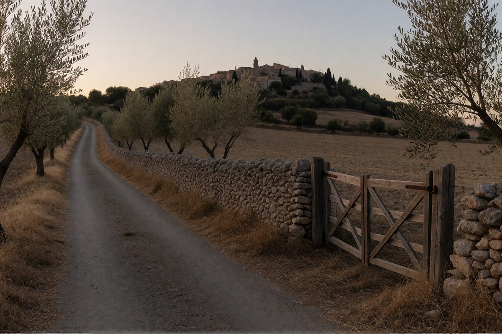

Sicilia · 18 novembre 2026
Omicidio di Gangi, resta in carcere il dipendente che ha confessato

Il gip di Termini Imerese ha convalidato il fermo di Mauro Ferrarello per l'omicidio dell'imprenditore agricolo Gaetano Alessandro Barreca. Davanti al giudice ha ripetuto il movente e il racconto dell'agguato.
di Franco Zanghì
Mauro Ferrarello, 35 anni, resta in carcere. Il giudice per le indagini preliminari di Termini Imerese ha convalidato il fermo dell'uomo che ha confessato l'omicidio di Gaetano Alessandro Barreca, l'imprenditore agricolo ucciso a Gangi, sulle Madonie, in provincia di Palermo. Il giudice ha disposto la custodia in carcere, come chiedeva la procura. Lo riferisce l'ANSA.
Il movente
Davanti al giudice Ferrarello, che era un dipendente della vittima, ha ripetuto le ragioni che aveva già dato ai carabinieri: «Mi sfruttava a livello economico, mi trattava male e non mi pagava. Dovevo sempre essere io a chiedere i soldi».
Il racconto dell'agguato
Secondo quanto riporta l'ANSA, Ferrarello ha detto di avere agito da solo. Avrebbe aspettato Barreca armato di un fucile rubato nel 2022 a un vicino, dopo la morte di quest'ultimo; con sé aveva anche un binocolo e una pistola. Quando ha sentito arrivare l'auto dell'imprenditore ha sparato un primo colpo, poi un secondo, ha ricaricato e ha sparato altre due volte, nelle campagne di contrada Rolica. Barreca, secondo il racconto, non ha detto una parola. Poi si è disfatto delle armi gettandole in un pozzo e subito dopo è andato a mangiare carne arrosto con un amico e con i parenti dell'amico.
Al giudice ha aggiunto: «Ricordo di avere perso la lucidità, neanche in questo momento mi rendo conto di quello che ho fatto. Se potessi tornare indietro sicuramente non farei questo sbaglio. Sono pentito». Le indagini sono state condotte dai carabinieri.
La vicenda
L'imprenditore era stato ucciso il 31 ottobre: la data è quella indicata dall'ANSA nel resoconto dell'udienza, mentre nelle prime cronache del delitto l'omicidio era stato collocato il primo novembre. Il fermo era stato eseguito il 14 novembre e di quel passaggio si è parlato nel servizio del 15 novembre su Patti Chiari News. Per Ferrarello vale la presunzione d'innocenza fino a sentenza definitiva.
Il punto
Il racconto dell'indagato tiene insieme due cose difficili da conciliare: la lucidità perduta e l'attesa con un binocolo e un fucile rubato anni prima. Sarà questo il nodo che i giudici dovranno sciogliere.
Fonti
- ANSA Sicilia, «Omicidio nel Palermitano: convalidato il fermo, indagato in carcere», 18 novembre 2026
- BlogSicilia, «Ho perso un amico, e poi la confessione sull'omicidio dell'imprenditore Barreca», 15 novembre 2026
- Giornale di Sicilia e MadoniePress, le cronache dal paese e dall'udienza di convalida, 18 novembre 2026
Indagini preliminari in corso alla data di pubblicazione: la custodia in carcere non è una condanna e vale la presunzione d'innocenza. Sulla data del delitto le fonti non coincidono: 31 ottobre secondo l'ANSA del 18 novembre, primo novembre nelle prime cronache.